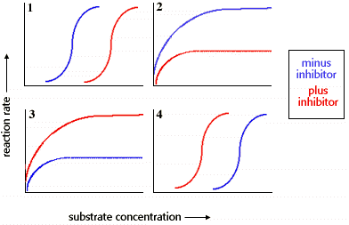
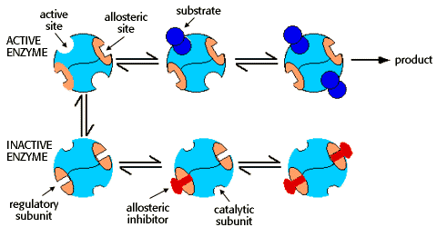
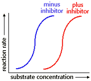

Energy, Enzymes, and Catalysis Problem Set
Problem 3 Tutorial: Kinetics of an allosteric enzyme.
Which of the following graphs shows the results of reaction rate vs substrate concentration for an allosteric enzyme in the absence and presence of an allosteric inhibitor?

Allosteric enzymes
Enzymes with multiple subunits have quaternary structure. One consequence of multiple subunits is that individual catalytic subunits each have their own active site. This means that an enzyme with quaternary structure can bind more than one substrate molecule. Allostery means "different shape." Allosteric enzymes change shape between active and inactive shapes as a result of the binding of substrates at the active site, and of regulatory molecules at other sites. In the simple case of an allosteric enzyme with an active and inactive form, the change in reaction rate with increasing substrate concentration is typically an "S-shaped" curve. For more information on allosteric enzyme, see the tutorial for question 14.
Binding of effectors to regulatory subunits
Allosteric enzymes may also have regulatory subunits that bind either activators or inhibitors. Activators and inhibitors are termed "effectors." Inhibitors cause the allosteric enzyme to adopt the inactive shape. Activators promote the active shape.
An equilibrium exists between the active and inactive shapes. The amount of active and inactive enzyme is dependent on the relative concentrations of substrate and inhibitor, as suggested by the diagram:

The binding of an allosteric inhibitor causes the enzyme to adopt the inactive conformation, and promotes the cooperative binding of a second inhibitor.
An excess of substrate can overcome the inhibitor effect. Substrate binding causes the enzyme to assume the active conformation, and promotes the cooperative binding of additional substrate, leading to product formation.
The meaning of the S-shaped Curves with and without inhibitor
|
The shape of the curve minus inhibitor is described in more detail in the tutorial to question 14. As the substrate concentration is increased, substrate binds to enzyme and triggers a conformation change to the active shape of the enzyme.
In the presence of inhibitor (plus inhibitor), higher concentration of substrate is required to shift the enzyme to the active conformation. However once a high enough concentration of substrate is reached to promote active shape, the substrate binds cooperatively (S-shaped curve), and the same maximum rate is achieved as without inhibitor. |
 |


Department of Biochemistry and Molecular Biophysics
University of Arizona
Revised: October 2004
Contact the Development Team
http://www.biology.arizona.edu
All contents copyright © 1996. All rights reserved.